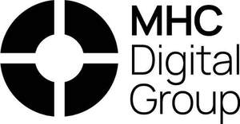

Trade Mark Journal No.2026/006 6 February 2026
UK00004327764 21 January 2026 (9,35,36,42)

International priority date claimed: 23 July 2025
(Australia)
(2569372)
- Class 9
- Downloadable computer software for facilitating financial transactions for others; downloadable computer software for managing digital currency transactions; downloadable computer software for digital currency payments and exchange transactions; downloadable computer software for accessing, reading and tracking information in the field of financial transactions on a blockchain; downloadable computer software for managing financial assets and transactions using blockchain technology; downloadable software for use in displaying, monetizing, buying, selling, trading, clearing, confirming and authenticating digitized assets; downloadable computer software for creating, managing, storing, accessing, sending, receiving, exchanging, validating and selling digital assets; downloadable computer software for creating, verifying, and managing digital identities; downloadable software for spending and trading digital assets; downloadable software for receiving and accessing digital assets; software for providing online trading platform for digital assets; computer hardware and software for managing cryptocurrency transactions; downloadable software for generating reports for analytical and informational purposes; downloadable electronic publications; downloadable application programming interface [API] software; downloadable mobile applications.
- Class 35
- Business administration consultancy in the field of digital technology; business advisory, consultancy and information services; providing business advice and information in the field of blockchain technology and cryptocurrency asset management; business intermediary services relating to the matching of potential private investors with entrepreneurs needing funding; executive search and placement services; business partnership search services; business management and consultancy; business consultancy services relating to data and information sharing software architecture; business networking; consultancy services relating to advertising, publicity and marketing; preparation and compilation of business and commercial reports and information; compilation and analysis of data and information relating to business management.
- Class 36
- Digital asset management services; provision of financial indices based on selected groups of securities and digital and virtual assets; asset and portfolio management; advisory services relating to the management of financial investments; financial investment services in the fields of securities, mutual funds and portfolio management; financial investment advisory services; venture capital advisory services; financial transactions provided via blockchain technology; financial services relating to trading, advising, managing and dealing in financial derivatives; financial and investment market risk analysis, appraisal and projection; providing financial risk assessment services for the mitigation of risk of loss and damage for insurance and financial purposes; strategic financial advisory services; financial securities custody services; digital currency trading services; digital currency brokerage services; digital currency exchange services; on-line financial transaction services; provision of funds; cryptocurrency asset management services relating to cryptocurrency staking; financial transaction services relating to cryptocurrency staking; trading of cryptocurrency; management of cryptocurrency assets; financial exchange of crypto assets; electronic transfer of crypto assets; trading of equities; financial information in the field of cryptocurrency; processing of financial transactions; processing of payment transactions; clearing services for payment transactions; provision of financial information; electronic funds transfer services; investment consultancy, brokerage and management services; investment advisory services; financial brokerage services; financial advisory, management and consultancy services; financial services.
- Class 42
- Platform as a service [PaaS]; software as a service [SaaS]; hosting of software as a service [SaaS]; software as a service [SaaS] for the purpose of providing product information and data exchange services; design, development and programming of computer software; design and development of software; design, programming and maintenance of computer platforms using blockchain technology; consultancy and information services relating to information technology architecture and infrastructure; cloud computing services; integration of computer systems and networks; hosting platforms on the Internet; user authentication services using blockchain technology for cryptocurrency transactions; authentication of data in the field of financial transactions using blockchain technology; data authentication via blockchain; authentication services; hosting of blockchain databases; blockchain-as-a-service [BaaS]; blockchain-as-a-service [BaaS] for creating and managing virtual goods authenticated by non-fungible tokens [NFTs]; creating an on-line community for registered users to participate in discussions and get feedback from their peers in the field of blockchain technology; providing temporary use of non-downloadable software for enabling members of an on-line community to spend and trade digital assets; software technical support services; infrastructure as a service [IaaS] being hosting computer software platforms for operating cloud servers for use by others.
M. H. Carnegie & Co Pty Limited
Representative: Springbird IP Limited